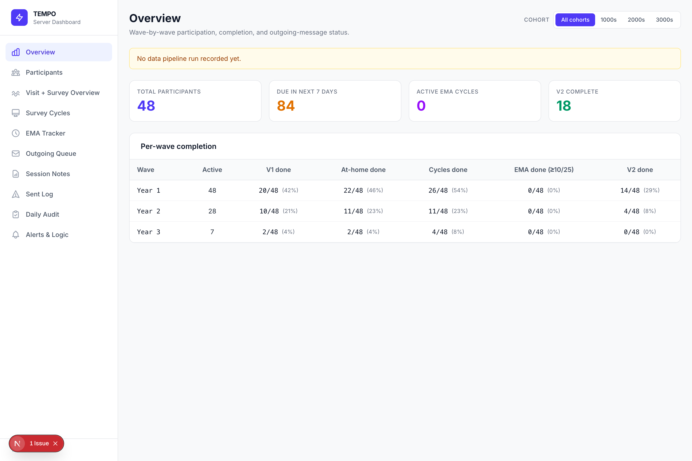
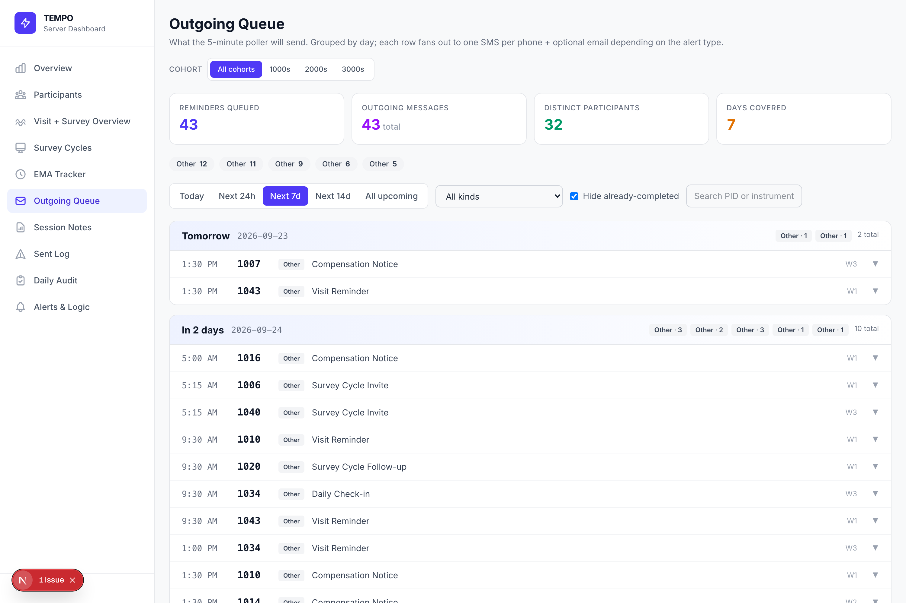
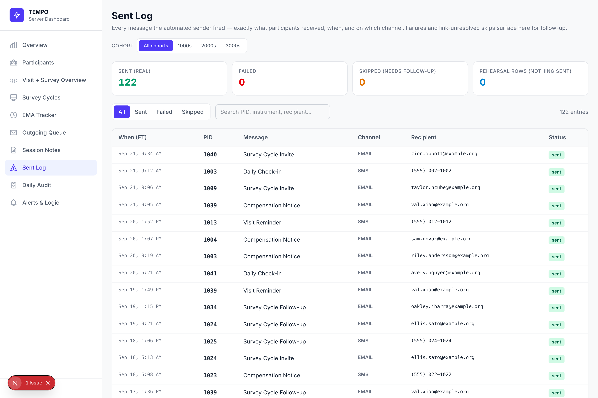
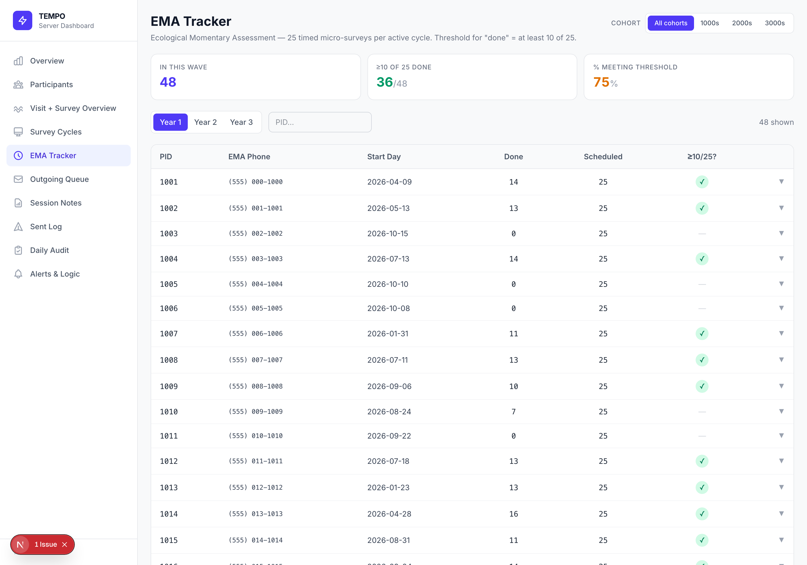
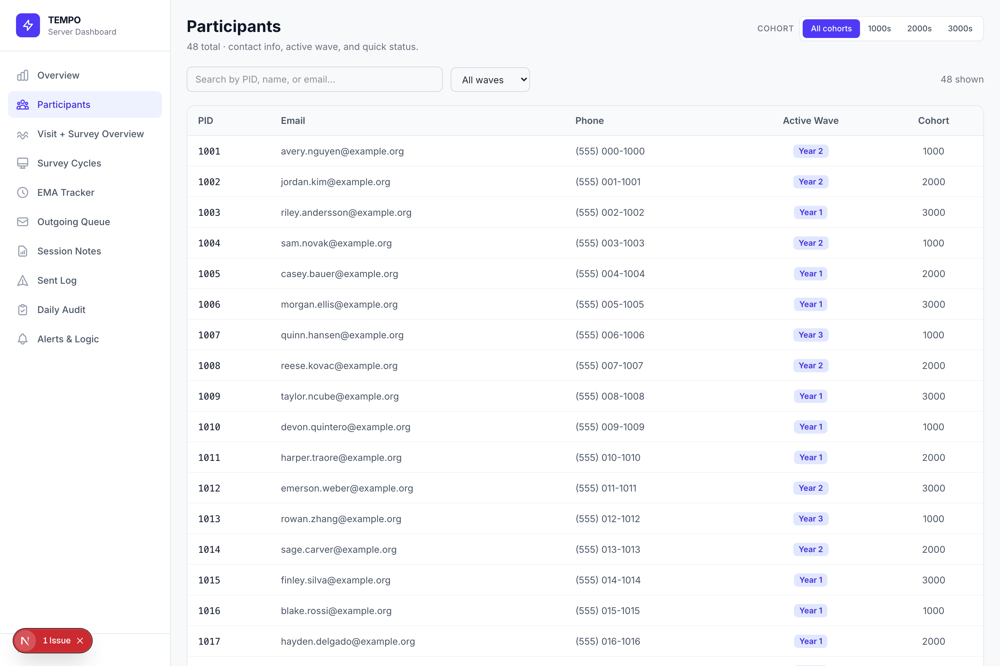

A survey platform already holds everything an outreach protocol needs: the roster, a personal survey link per participant, the date fields a schedule hangs off, and a completion flag on every form. Messaging APIs sit on the other side. TEMPO is the part in between — it reads the first, computes who is owed what and when, sends by SMS and email at that moment, and writes down what it did.
The result runs itself. Nobody has to remember to send anything, and every message is accounted for afterwards. That holds for a reminder due sometime next Tuesday and for a momentary-assessment prompt that has to land at 7:34 PM exactly, twenty-five times across a sampling period.
Every automated message is declared once. A pipeline expands those declarations against the current export into a queue of dated rows; senders drain the queue on a clock.
Nothing about this is tied to one vendor. The reference build speaks REDCap, OpenPhone and Gmail SMTP, but the contract is small enough that Qualtrics, Twilio, SES or anything similar slots in by reimplementing a handful of calls.
| Integration point | What TEMPO needs from it |
|---|---|
| Survey platform | A record export, date fields, per-form completion flags, and a per-participant survey link |
| SMS provider | A send endpoint. Optionally a message-history endpoint, used to arbitrate against duplicates |
| SMTP credentials, or any HTTP send API | |
| Scheduler | Anything that can invoke a URL on a schedule |
Field names below are illustrative — in a deployment they are your own event and instrument names.
One entry: when it is owed, when it fires, where it goes, and what it says.
{
instrument: "Follow-up reminder",
// Owed only while the form is still incomplete.
condition: "[followup_arm_1][followup_1_complete]<>2",
// 14 days after the baseline date, then every 7 days, at most 3 times.
sendDateSpec: "14 days after [baseline_arm_1][baseline_date] " +
"repeat every 7 days up to 3 times",
// A phone field implies SMS, an email field implies email.
destinationSpec: "[baseline_arm_1][participant_phone]\t[baseline_arm_1][participant_email]",
// [event][field] fills per participant; [survey-link:form] becomes
// that participant's own URL, resolved at send time.
message: "Hi [baseline_arm_1][first_name], your follow-up is open: " +
"[followup_arm_1][survey-link:followup_1]",
}The spec is resolved per participant against their own dates. A repeat stops the moment the completion flag flips, so whoever responds stops being chased.
const anchor = participant.fields["baseline_date"]; // "2026-03-04"
const { offsetDays, everyDays, maxTimes } = parseSpec(alert.sendDateSpec);
const sends = [];
for (let n = 0; n < maxTimes; n++) {
if (isComplete(participant, alert.condition)) break; // responded — stop
sends.push(atStudyTime(addDays(anchor, offsetDays + n * everyDays), "17:00"));
}
// → 2026-03-18T17:00, 2026-03-25T17:00, 2026-04-01T17:00await fetch("https://api.openphone.com/v1/messages", {
method: "POST",
headers: { "Content-Type": "application/json", Authorization: API_KEY },
body: JSON.stringify({ content: body, from: FROM_NUMBER, to: [e164] }),
signal: AbortSignal.timeout(30_000),
});const mailer = nodemailer.createTransport({
host: "smtp.gmail.com", port: 587, secure: false,
pool: true, auth: { user: SMTP_USER, pass: SMTP_PASS },
});
await mailer.sendMail({ from, to: recipient, subject, text: body });Delivery is the one step that cannot be undone, so at-most-once is enforced three independent ways — each catches what the others miss.
| Mechanism | What it catches |
|---|---|
Append-only ledgerpid|alert|time|channel|recipient | The ordinary case: a rerun, a retry, an overlapping schedule |
| Claim before transmit | Two invocations racing the same moment — only one wins the claim |
| Provider history check | A send that happened but whose ledger write was lost |
Around those sit the ordinary guards: quiet hours, an opt-out list checked twice, a per-run cap, a refusal to send any message whose survey link did not resolve, dry-run by default, and a runtime kill switch that takes effect without a redeploy. Timed prompts wait inside the invocation and fire on the second rather than trusting a scheduler's punctuality; one that cannot make its window is recorded as a skip instead of arriving late.
Most outreach tolerates slack — a reminder is fine an hour late. Ecological momentary assessment is not like that. A prompt is a measurement instrument: it asks what someone is doing right now, so one that arrives forty minutes late does not produce late data, it produces wrong data, and a participant who learns the prompts drift stops treating them as momentary at all.
TEMPO treats a sampling period as a grid — fixed weekday and clock-time slots anchored to each participant's own start date — and materializes it into individually dated rows with the participant's chosen contact number and pre-resolved survey link attached.
// A sampling grid: slots repeat across the period, anchored per participant.
const GRID = [
{ day: "Mon", at: "08:10" }, { day: "Mon", at: "13:45" }, { day: "Mon", at: "19:20" },
// … 25 slots across the sampling period
];
for (const slot of GRID) {
schedule.push({
pid: participant.id,
sendAt: atStudyTime(nextWeekday(startDay, slot.day), slot.at),
phone: participant.fields["prompt_phone"],
surveyLink: await resolveLink(participant, slot.form),
});
}Delivery does not trust the scheduler to be punctual. The sender is invoked on a coarse clock, finds any slot arriving within its look-ahead, and waits inside the invocation to transmit on the second. Before firing it claims the slot, so two concurrent invocations cannot both send. A prompt that cannot make its window inside a fixed grace period is recorded as a protocol skip rather than delivered late.
// Wait out the remainder in-process, then claim and fire.
const waitMs = slot.sendAt - Date.now();
if (waitMs > 0) await sleep(waitMs);
if (await claim(slot.key)) { // lost the race? another run has it
await sendSMS(slot.phone, render(slot));
await ledger.append({ ...slot, status: "sent", latencySec: 2 });
}In production this lands prompts within a couple of seconds of their scheduled second, and the latency is recorded per message — so drift is something you can see in the ledger rather than something you discover in the data.
The same files the senders write are what the dashboard reads — no second database, no reporting layer to keep in sync. Screens below run on synthetic data.





Access is a single shared password behind a signed cookie, checked in middleware on every route. A daily reconciliation compares what was planned against what the ledger recorded, so a message that quietly failed surfaces the next morning rather than at the end of the study.